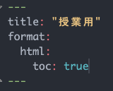
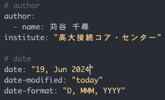
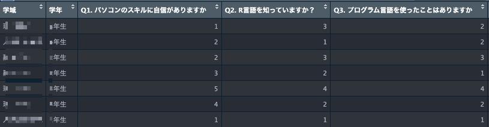
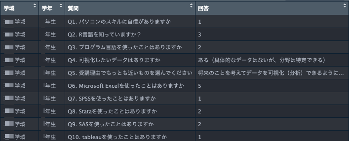
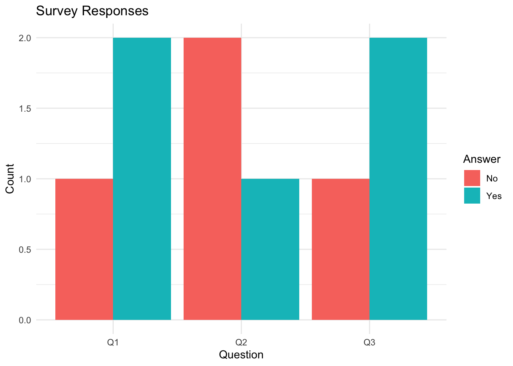

![]()
Ⅰ. 前回の振り返り
- 前回の「授業の感想」（別紙参照）
- 初回アンケート
Ⅱ. 前回の積み残し
1. Week1
2. 補足
⑴ 先進事例
⑵ パッケージのインストール（追加）
- Consoleに以下のコードを入力して実行（Enter）
install.packages("gt")
install.packages("skimr")
install.packages("palmerpenguins")Ⅲ. markdownとチャンク
- quartoの基本構成
- YAML; markdown; チャンク
- YAML
- ページの出力形態などを統御（詳しくは別途説明）
YAMLを改変して､目次を表示させよう（目次を付けると見出しレベルを意識しやすくなり､論理的な構成になります）

YAMLを改変して､氏名と日付を入れましょう

- markdown:
- YAMLとチャンク以外はmarkdownエリア
- 簡易的記述法 cf. markup (html言語)
- 箇条書き（数字またはハイフン）
- 見出し（ハッシュ#）
- ハッシュの数で見出しレベルが変わる
- 1ハッシュが見出しレベル1
- 引用: >
- URL: 文字列
- 画像：

- 上の2行は下記のように入力しています
教科書69ページ図2.1を参照しながら､適当に見出しを入れて､Outline（画面右上）を表示させてみよう
チャンク内でハッシュはコメントアウト（プログラムの一部を無効化する；メモとする）を意味します
見出しのフォントサイズや強調のフォント色などは､CSSで統御します。別途説明します
ほとんどの場合､解析結果を再現したいと思う人は､今から半年か一年後の自分自身です（ヒーリー，キーラン (2021)）
- ➡ コードとメモをしっかりと残すことが重要
Ⅳ. 基本的な流れと用語
1. 基本的な流れ：dplyrとggplot
flowchart TB
A([データの加工 <br> <strong>dplyr</strong> <br> 例 select filter]) --- B([データの可視化 <br> <strong>ggplot2</strong> <br> 例 geom_bar])


2. 用語
- パッケージとファンクション（関数）
- Posit Cheatsheets（別紙）参照
上記のサイトのチートシートには､日本語化されているものもあるが､情報が古いので注意
- オブジェクト
- 変数（variable）
- 読み込んだデータ
- 関数（function）
- 代入したデータ（ヒーリー，キーラン (2021), 「2.3.1 すべてに名前がある」）
- データフレーム（df）
- 行列からなるデータ
- ある列のデータの型（後述）は一つのみ
- 例：天気「晴れ；曇り；雨；嵐」➡ character型（数字が入っていたらおかしい）
- 例：気温「20; 25; 30」➡ numeric型（文字データが入っていたらおかしい）
3. 整然データと雑然データ
⑴ 整然（tidy）データ
- 各変数は独立した列で表現される
- 観測した値は1行に記録される
- 観測データの集合はテーブルを表現する
（ヒーリー，キーラン (2021), 「付録A.1.3「Tidyデータ」329-332ページ）
表A.1, A.2, A.3を見比べてみよう（カラム名に注目）
以下の二つの表も見比べてみよう（カラム名に注目）


- 一般的なデータは横持ちデータ
- 人間にとって理解しやすい
df_初回アンケート <-
read_csv("data/RとQuartoではじめるデータサイエンス（2024）：初回アンケート.csv")
df_初回アンケート %>% view()- コンピュータは縦持ちデータの方が理解しやすい
- わかりやすいカラム名
- 少ないカラム数
- R（tidyverse）ではpivot_longer/pivot_widerを使って変換する
- 図「初回アンケート（縦持ちデータ）」は､一人の回答者データを10行に展開している
df_初回アンケート_long <- df_初回アンケート %>% # 代入（ 「<-」代入演算子）
mutate(across(everything(), as.character)) %>% # すべての値を文字形式にする
pivot_longer(
cols = starts_with("Q"), #カラム名が「Q」から始まる列を軸に変換
names_to = "質問", # カラム名から､新しく作成するカラム名
values_to = "回答" # 値から､新しく作成された値のカラム名
)
df_初回アンケート_long %>% view()⑵ 雑然（messy）データ
- 整然データではないデータ
- 上記に加え､不要な空白行（セル）
⑶ Chat GPTに聞いてみた
googleフォームで利用者アンケートを実施しました。集計結果は横持ちデータです。例示を交えて縦持ちにする方法を教えてください。r言語（tidyverse）でお願いします。またそのデータを使って､ggplotで図を作ってください。
Code
# サンプルデータの作成
library(tidyverse)
data <- tibble(
respondent_id = c(1, 2, 3),
Q1 = c("Yes", "No", "Yes"),
Q2 = c("No", "Yes", "No"),
Q3 = c("Yes", "No", "Yes")
)
# データを縦持ちに変換
data_long <- data %>%
pivot_longer(cols = starts_with("Q"),
names_to = "Question",
values_to = "Answer")
# ggplot2で棒グラフを作成
ggplot(data_long, aes(x = Question, fill = Answer)) +
geom_bar(position = "dodge") +
labs(title = "Survey Responses", x = "Question", y = "Count") +
theme_minimal()
4. 代入
df_初回アンケート <- df_初回アンケート # オブジェクトを加工し､同じオブジェクトを上書き
# すべてのチャンクに使うデータに加工したい場合
df_初回アンケート_B <- df_初回アンケート # オブジェクトを加工し､新しいオブジェクトを作成
# 特定の状況､チャンク内でのみデータを使いたい場合
# 代入しない場合､データの加工はそのパイプ内でのみ有効（オリジナルのオブジェクトのまま）- チャンク内で
- Win: Alt + 「-」キー
- Mac: Option + 「-」キー
Ⅴ. データの型
- すべてのオブジェクトは型（クラス）をもつ
- R（tidyverse）がデータを読み､適切と思われる型を割り当てる
- 重要な型
- numeric（数字）
- character（文字）
- factor（ファクター（因子）：レベルを設定できる）
- logical（true / false）
- data.frame（baseRのテーブル形式）
- tibble（tidyverseのテーブル形式）
- numeric/character/factor
- ggplotで特に問題になる
iris %>% as.tibble() %>% str()tibble [150 × 5] (S3: tbl_df/tbl/data.frame)
$ Sepal.Length: num [1:150] 5.1 4.9 4.7 4.6 5 5.4 4.6 5 4.4 4.9 ...
$ Sepal.Width : num [1:150] 3.5 3 3.2 3.1 3.6 3.9 3.4 3.4 2.9 3.1 ...
$ Petal.Length: num [1:150] 1.4 1.4 1.3 1.5 1.4 1.7 1.4 1.5 1.4 1.5 ...
$ Petal.Width : num [1:150] 0.2 0.2 0.2 0.2 0.2 0.4 0.3 0.2 0.2 0.1 ...
$ Species : Factor w/ 3 levels "setosa","versicolor",..: 1 1 1 1 1 1 1 1 1 1 ...- Sepal.length（がく片の長さ）: numeric
- Sepal.Width（がく片の幅）: numeric
- Species（アヤメの品種）: factor with 3レベル（1. setosa, 2. versicolo, 3. virginica）
Ⅵ. 実習
1. オブジェクト､代入､データの型
教科書77ページから87ページのコード（緑色の背景をもつ直前の文字列）を入力し､実行してみよう
2. コードへの忍耐とR Studioの恩恵
忍耐強くあることが肝心です。エラーはいつか起こるもので､心配することはありません。……コードの誤りを修正する過程で､言語の仕様を理解することにつながります（ヒーリー，キーラン (2021), 「2.4「自分自身､Rへの忍耐」88-89ページ）
- シンタックスハイライト
- 自動補完
- インデント
Ⅶ 宿題
1. 授業の感想
- 回答先：Google Forms
- 締め切り：2024年6月21日（金）23時59分まで
2. 可視化したいデータ
- Q1. ggplotを使って可視化したいデータをアップロードして下さい（csvかexcelファイル）
- 手元にデータがない場合は､こんなデータがある／作れそうだ､というようなことを書いて下さい
- Q2.このデータと､このデータから作りたい図について簡単に説明して下さい
ggplot2 extensions - galleryやThe R Graph Galleryを見て､作りたい図のイメージを膨らませて下さい
- 回答先：Google Forms
- 締め切り：2024年6月26日（水）10時30分まで
可視化したいデータについて見当がつかない場合は､早め（できれば今日の授業後）に教員に相談してください